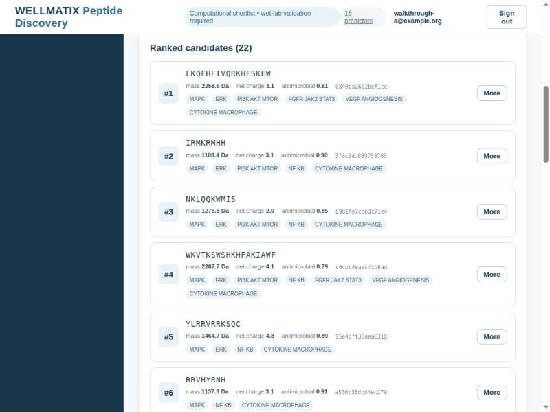

Describe a wound and what the peptide should do. The pipeline generates candidate sequences, screens them through physicochemical, functional, structural, safety and synthesis models, and returns a ranked shortlist with the evidence behind each one.
Each piece runs on its own. There is no hard dependency on Google Cloud, on a GPU, or on any copyleft library.
14 stage directories, 8 implemented — generation, screening, functional models, structure, safety, synthesis, ranking.
ESM-2 embeddings with XGBoost and sklearn heads, a BiLSTM+CNN MIC ensemble, ESMFold for structure, ProtGPT2+LoRA for de novo generation.
Submits Vertex AI Custom Jobs and reads their artifacts — optional, for scale. The pipeline runs locally without it.
Email/password accounts and an authenticating proxy: the only route to the job API, which has no auth of its own.
React and TypeScript, one origin, no CORS. Every number it shows is a field of a response, never recomputed.
Three containers via Docker Compose. Only the web one publishes a port.
The whole pipeline runs locally. No Google Cloud, no Docker, no GPU. Slower on CPU, and the predictors need model weights — but it is the same code, not a reduced version of it.
git clone https://github.com/Wellmatix-Bio/peptide_discovery_platform.git
cd peptide_discovery_platform
python -m venv .venv && source .venv/bin/activate
pip install -r requirements.txt
python main.py configs/runs/test_run.yamlStated plainly, because the interface states it too. A platform that hides its limits is harder to trust than one that prints them.
The rule the codebase bends hardest to keep. If a model is unavailable, a screen is skipped or a value withheld, the result says so — not_screened, available: false, "No value" — never a default, a dash, or a zero.

| Document | What it covers |
|---|---|
| Architecture | How the pieces fit, and what you can leave out |
| Deployment | Running the stack locally and on a VM |
| Licensing | Apache-2.0, the two optional copyleft dependencies, model weights |
| Baseline | The measured test baseline and the defects behind it |
| Walkthrough | Every page, with screenshots |
| Contributing | Setup, tests, and what will waste your afternoon if nobody tells you |